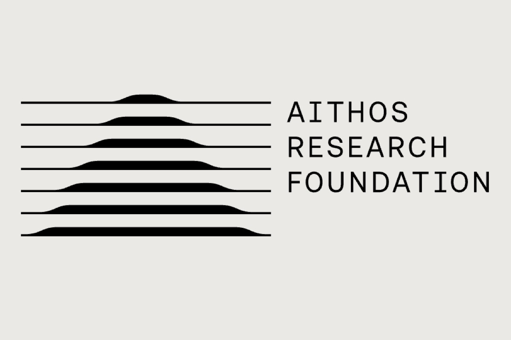

The story
From Ascending AI to graphzero
Founder & CEO Lennard Zwart on why greater AI capability demands greater control — and the thinking behind graphzero.
Read the story in Het Financieele Dagblad → Opens fd.nl in a new tab

AI is changing how organizations work.
We believe Europe should be building the systems that shape that future.
graphzero is built in Europe for organizations that want to turn their knowledge into an advantage, without giving up control.
The story
Founder & CEO Lennard Zwart on why greater AI capability demands greater control — and the thinking behind graphzero.
Read the story in Het Financieele Dagblad → Opens fd.nl in a new tab
The graphzero ecosystem
graphzero is part of the Aithos ecosystem, which researches how increasingly autonomous AI systems can remain pluralistic, controllable, and aligned with human interests.
Explore Aithos → Opens aithos.org in a new tab
graphzero is part of The Stack, Amsterdam’s AI hub bringing together AI companies, researchers, and organizations working to build the next generation of AI.
Explore The Stack → Opens thestack.ai in a new tab
The amount of knowledge organizations create is growing faster than ever.
The opportunity is to turn that growing body of knowledge into an organizational advantage.